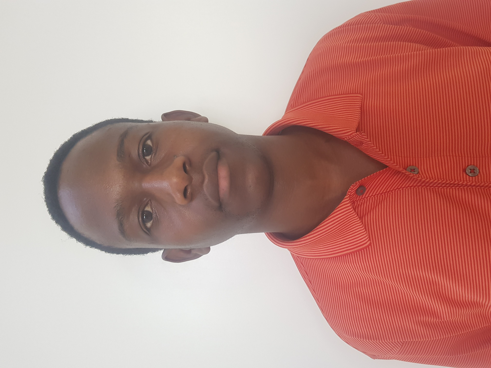

Nyasha Shepard Ushewokunze WDD130
My name is Nyasha Shepard Ushewokunze enrolled in a course WDD 130 . As a beginner in both software development and cybersecurity, I'm embarking on an exciting journey of learning and exploration. My passion for technology and security is what drives me forward, as I eagerly absorb knowledge and hone my skills with each new challenge I encounter. In the realm of cybersecurity, I approach each task with a sense of determination and curiosity. While I may be just starting out, I'm committed to understanding the intricacies of digital protection and developing strategies to safeguard against potential threats. Every concept I grasp and every technique I learn brings me one step closer to becoming a proficient defender of digital assets. Beyond my pursuits in cybersecurity, I've also begun to explore the world of music through the piano. As a beginner, I'm filled with excitement and anticipation with each note I play. It's a journey of discovery as I familiarize myself with the keys and unlock the potential for creating beautiful melodies. In both my cybersecurity and piano endeavors, I see endless possibilities for growth and mastery. While I may be at the beginning of my journey, I'm fueled by a passion to learn and improve, knowing that each step forward brings me closer to realizing my goals in both fields.